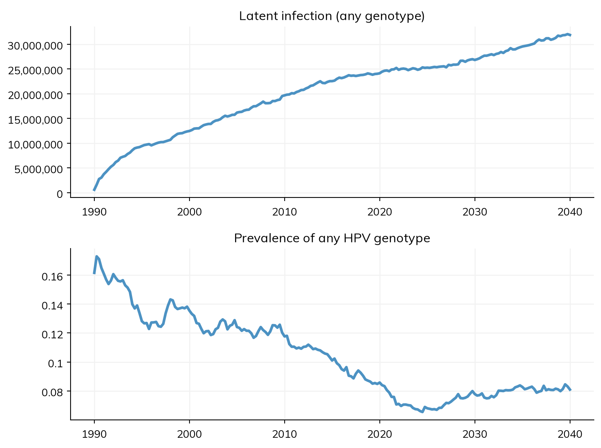
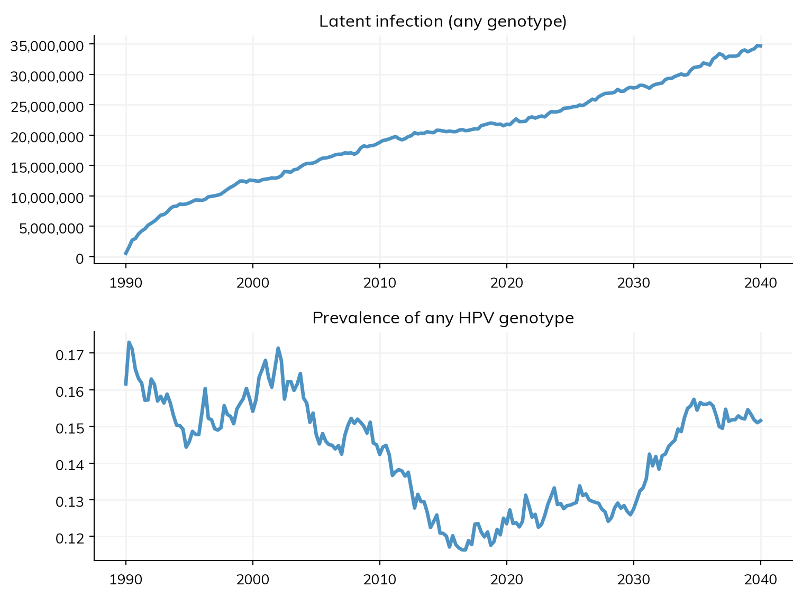

There is some uncertainty about whether apparent clearance of HPV represents true clearance, or whether the infection becomes undetectable and then, sometimes years later, becomes active again. This matters for policy: a woman who screens negative at 35 and reactivates at 45 is not protected by having been screened, and a therapeutic vaccine that reaches dormant infections would prevent cancers that screening cannot.
By default, we do not model latency in HPVsim, but there is a parameter that allows you to switch latency on. In this tutorial demonstrate this switch, see the reservoir it creates, and find out what it does to the cancer burden.
The two parameters
Latency is off unless you turn it on. Two per-genotype parameters control it:
import numpy as npimport starsim as ssimport hpvsim as hpvblank = hpv.Sim(location='nigeria', genotypes=[16], n_agents=100, start=2000, stop=2001, verbose=0)blank.init()print('hpv_control_prob:', blank.diseases.hpv16.pars.hpv_control_prob)print('hpv_reactivation:', blank.diseases.hpv16.pars.hpv_reactivation)
hpv_control_prob is the chance that a woman who would otherwise clear an infection instead becomes latent. It is 0 by default: nobody enters the latent state and no reactivation code runs.
hpv_reactivation is the yearly hazard of a latent infection reactivating.
Latency only applies to women: men clear or stay infected. And a woman’s accumulated sev_imm, the immunity she built by clearing infections before, scales her reactivation hazard down, so women with a longer history of clearance reactivate less. The default of reactivation rate is 0.025 per year, but given the uncertainty about this parameter, we would recommend treating it as a parameter to calibrate.
Three ways to run it
PARS =dict( location ='nigeria', genotypes = [16, 18, 'hi5', 'ohr'], n_agents =2000, start =1990, stop =2040, ms_agent_ratio =25, verbose =0,)arms = {'Latency off (default)': dict(hpv_control_prob=0.0),'Latency on, slow wake-up': dict(hpv_control_prob=0.5),'Latency on, fast wake-up': dict(hpv_control_prob=0.5, hpv_reactivation=ss.probperyear(0.15)),}
Passing hpv_control_prob=0.5 as a bare keyword applies it to every genotype in the run. To set it for one genotype only, nest it: pars=dict(hpv16=dict(hpv_control_prob=0.5)). Check it landed with sim.diseases.<genotype>.pars.hpv_control_prob after init() — a run in which the parameter failed to route looks exactly like a run in which latency does nothing.
Because cancer is rare, run each arm with three random seeds so we can tell a real difference from a lucky one:
print(f'{"":26s}{"latent women":>14s}{"reactivations":>14s}{"HPV prev":>10s}'f' {"cancers":>12s}{"seed range":>25s}')for label, sims in runs.items(): latent = np.mean([float(s.results.all_hpv.n_latent[-1]) for s in sims]) wakeups = np.mean([float(np.asarray(s.results.all_hpv.new_reactivations).sum()) for s in sims]) prev = np.mean([float(s.results.all_hpv.prevalence[-1]) for s in sims]) cancers = [float(s.results.all_hpv.cum_cancers[-1]) for s in sims]print(f'{label:26s}{latent:>14,.0f}{wakeups:>14,.0f}{prev:>10.3f}'f' {np.mean(cancers):>12,.0f}{min(cancers):>11,.0f} to {max(cancers):>10,.0f}')
latent women reactivations HPV prev cancers seed range
Latency off (default) 0 0 0.045 954,237 691,726 to 1,128,606
Latency on, slow wake-up 30,681,226 22,107,778 0.068 1,173,955 929,328 to 1,391,117
Latency on, fast wake-up 33,214,362 97,282,398 0.131 1,743,048 1,582,731 to 1,862,487
Read the rows one at a time.
Latency off puts nobody in the latent state and produces no reactivations, which confirms the default really is inert.
Slow wake-up parks a large number of women in a latent reservoir and produces reactivations, and the cancer total falls. Latency is a sink: a woman who becomes latent is neither infectious nor susceptible, so she is out of both the transmission chain and the cancer pathway for as long as she stays there. At a slow wake-up hazard, most of those women never come back within the run.
Fast wake-up drains the reservoir faster, and the burden climbs back past the latency-off level. The reservoir re-seeds active infection instead of absorbing it, and every reactivation draws a fresh natural-history trajectory — so a woman who reactivates repeatedly gets repeated chances to progress. Latency with a fast enough wake-up hazard is worse than no latency at all.
Compare each arm’s mean against the seed range in the same row before believing any difference between arms. The gap between the two latency arms should be clearly wider than the spread within either.
So the two parameters do different jobs. hpv_control_prob sets how many women enter the reservoir; hpv_reactivation sets how strong a sink it is. The second one carries most of the epidemiology, and it is the one with no evidence behind its default.
See the reservoir
slow = runs['Latency on, slow wake-up'][0]fig = slow.plot(['all_hpv_n_latent', 'all_hpv_prevalence'])
Figure(768x576)

fast = runs['Latency on, fast wake-up'][0]fig = fast.plot(['all_hpv_n_latent', 'all_hpv_prevalence'])
Figure(768x576)

Compare the two pairs of panels. The slow arm accumulates a reservoir and holds active prevalence down. The fast arm cycles women through the reservoir instead, so active prevalence stays much higher.
Latency does not affect every genotype equally
A woman latent for one genotype is out of that genotype’s cancer pathway but is still available to the others, so latency reshapes the genotype mix as well as changing the total:
for label in ('Latency off (default)', 'Latency on, slow wake-up'): sim = runs[label][0] per_genotype = {k: float(m.results.cum_cancers[-1])for k, m in sim.diseases.items() ifisinstance(m, hpv.HPV)} total =sum(per_genotype.values())print(f'{label} (total {total:,.0f})')for genotype, count in per_genotype.items():print(f' {genotype:8s}{count:>12,.0f} ({count / total:>5.1%})')
Compare the percentage shares, not just the counts. The pooled hi5 and ohr groups lose proportionally more than HPV16 and HPV18 do, so the genotype distribution of cancers shifts as well as the total falling. If you calibrate to a genotype distribution — as Tutorial 7 does — turning latency on will move that fit, so calibrate with latency set the way you intend to run it. And because the genotypes interact, quantify latency’s impact with the genotype set you actually intend to model rather than a reduced one.
When HIV is in the model
If the sim contains HIV, a woman’s reactivation hazard is also multiplied by rel_reactivation, chosen by her CD4 stratum. Both strata default to 1.0 — no effect — because there is no calibrated value to use. If you want HIV to accelerate reactivation, set it yourself:
example = hpv.Sim(**PARS, rand_seed=0, hpv_control_prob=0.5, model_hiv='transmission', hiv_pars=dict(beta_m2f=0.015, rel_reactivation_lo=3.0, # CD4 below 200 rel_reactivation_hi=1.5)) # CD4 200 to 500example.run()print('Reactivations with HIV in the model:',f'{float(np.asarray(example.results.all_hpv.new_reactivations).sum()):,.0f}')
Reactivations with HIV in the model: 23,712,226
Tutorial 8 covers the rest of the HIV effects on HPV. This needs the HIV extra installed: pip install hpvsim[hiv].